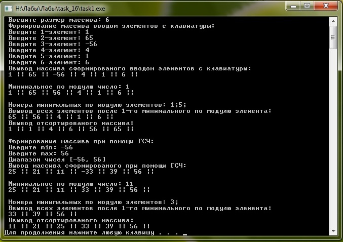

Лабораторное задание №16. Класс для обработки целочисленного массива.
Условие задачи
Написать
программу, в которой предусмотреть класс для организации обработки
целочисленного массива. Внутри класса реализовать два конструктора: 1–й
конструктор должен обеспечивать ввод элементов массива с клавиатуры; 2—й
конструктор должен формировать значения элементов массива в задаваемом
диапазоне [min,
max]
с помощью генератора случайных значений. Внутри класса предусмотреть следующие
методы:
·
вывод массива на экран;
·
вычисление значения минимального по модулю элемента;
·
вывод номера(номеров) минимального по
модую элемента;
·
вывод всех элементов, расположенных
после первого минимального по модулю элемента.
· упорядочить элементы массива по убыванию
модулей элементов;
Описание алгоритма
Для решения задачи нам
необходим класс с именем obrabotka
в нем определим 6 ф-ий и 2 явных конструктора 1 конструктор для ввода
чисел в массив с клавиатуры 2 для ввода элементов при помощи ГСЗ. В
классе будут предусмотрены ф-ии для: вывода сформированого массива на
экран, " взятие" массива по модулю сортировка массива по убыванию
элементов вывод минимального элемента в массиве, вывод номера (номеров)
минимального по модулю элементов, вывод всех элементов, расположеных
после первого минимального по модулю элемента. Все эти ф-ии и
конструкторы определены как public, их описание будет далее, а в private определеим целочисленный массив с 9 элементами.
В главной ф-ии выведем сообщение о том
чтонеобходимо ввести размер массива. Далее на экран выведем сообщение
что далее массив дудет формированся вводом чисел с клавиатуры.
Определим переменные которые будут хранить номер и значения
минимального элемента массива. После
чего определим класс, где сработает 1 явный конструктор. выведем
сообщение о том что сейчас на экран будет выведен сформированый массив
и ф-ей выведем его на экран. После чего сработают следуюoют методы:
метод для " взятие" массива по модулю, метод для сортировка
массива по убыванию элементов, метод по
выводу минимального элемента в массиве, метод по выводу номера
(номеров)
минимального по модулю элементов, метод по выводу всех элементов,
расположеных
после первого минимального по модулю элемента. После того как это
выполнится выведется сообщение о том что сейчас произойдет формирование
массива при помощи ГСЗ и попросим ввести пользователя минимальное и
максимальное значение элементов. А далее произойдет тоже самое что и
для ввода чисел с клавиатуры.
1 явный конструктор предназначен
для ввода чисел с клавиатуры. Определим цикл, а в теле этого цикла
выведем сообщение для ввода i-го элемента.
2 явный конструктор предназначен
для формирования произвольного числа в заданом промежутке. В теле этой
ф-ии необщодимо определить ГСЗ, а уже затем циклов присвоить i-ому
элементу некоторое сгенерированое число.
В ф-ии предусматривающей
реализацию метода для вывода массива на экран, произойдет следующее.
Определим в цикл, а уже в нем произойдет вывод i-го элемента.
В ф-ии предусматривающей
реализацию метода по "взятию" массива по модулю. В ней бедет определен
цикл в котором определим условную конструкцию if для проверки элемента
на отрицательность. т.е. если i-ый элемент отрицательный то он
домножается на -1. т.е. весь массив берется по модулю.
В ф-ии предусматривающей
реализацию метода по выводу минимального элемента в массиве.
Переменной которая будет хранить минимальный элемент присвоим 0
элемент массива и переменной хранящей номер минимального элементка
присвоим 0 (0 номер), эти параметры передаются в ф-ия из главной, где
они и определены. Затем определим цикл в теле которого определим
условную конструкцию if которая будет проверять i-ый элемент с
переменной хранящей минимальный элемент массива. Если i-ый элемент
больше то присваиваем переменной, хронящий мин. элемент, i-ый элемент и
переменной, которая запоминает номер мин. элемента, присваиваем номер
под которых хранится i-ый элемент. После того как цикл выполнился
выводим сообщение о том что сейчас будет выведен минимальный по модулю
элемент.
В ф-ии предусматривающей
реализацию метода по выводу ноамера (номеров) минимального по модулю
элемента. В ней выведем сообщение о том что сейчас будут выведены
номера минимальных по модулю элементов. Определим цикл, а в теле цикла
определим условную конструкцию if которая будет проверять некоторый
i-ый элемент с минимальным элементом, который был определен в главной
ф-ии и получил минимальное значение в предыдущей ф-ии. Если элементы
совпали то выволится номер строки.
В ф-ии предусматривающей
реализацию метода по выводу всех элементов, расположеных после
первого минимального по модулю элемента. На экран выведем
сообщение о том что сейчас произойдет вывод всех элементов после 1-го
минимального по модулю элемента. И определим цикл начинающийся не с 0,
а с номера минимального элемента, который мы сохронли когда вычисляли
минимальный элемент, и добовляем плюс 1 т.к. необходимо вывести не
с минимального элемента. а со следующего элемента массива. А в теле
цикла произойдет вывод всех элементо после 1-го минимального.
В ф-ии предусматривающей
реализацию метода для сортировки массива по убыванию. Сортировка
массива произойдет по методу пузырька, который уже несколько раз
подробно описывался в других программах (например в 12 лабораторно в ф-ии sorting)
и на этом методе мы не будем останавливатся. Однако после сортировки
произойдет вывод элементво, при помощи цикла.
Текст программы с комментариями
#include <iostream>
#include <time.h>
using namespace std;
class obrabotka
{
public:
obrabotka (int n); // явный конструктор для ввода элементов с клавиатуры
void output_mass (int n) const; // вывод сформированого массива
void module (int n); // "взятие" массива по модулю
void sorting (int n); // сортировка массива по убыванию
void min_elem (); // вывод минимального элемента в массиве
void nomer_min_elem (int n) const; // вывод номера(номеров) минимального по модую элемента
void output_min (int n); // вывод всех элементов, расположенных после первого минимального по модулю элемента.
obrabotka (int min, int max, int n); // явный конструктор для ввода элементов в массив при помощи ГСЧ
private:
int mass[10];
};
obrabotka::obrabotka (int n)
{
for (int i=0; i<n; i++)
{
cout << " Введите " << i+1 << "-элемент: ";
cin >> mass[i];
}
}
obrabotka::obrabotka(int min, int max, int n) // явный конструктор для ввода элементов в массив при помощи ГСЧ
{
srand (( unsigned ) time(NULL)); // определение ГСЗ
for (int i=0; i<n; i++)
{
mass[i]=rand()%(max-min+1)+min; // формирование числа
}
}
void obrabotka::output_mass (int n) const // вывод сформированого массива
{
cout << ' ';
for (int i=0; i<n; i++)
{
cout << mass[i] << " || ";
}
cout << endl << endl;
}
void obrabotka::module (int n) // "взятие" массива по модулю
{
for (int i=0; i<n; i++)
{
if (mass[i]<0)
{
mass[i]=-mass[i];
}
}
}
void obrabotka::min_elem (int n, int & index_min, int & min_el) // вывод минимального элемента в массиве
{
min_el=mass[0];
index_min=0;
for (int i=1; i<n; i++)
{
if (mass[i]<min_el)
{
index_min=i;
min_el=mass[i];
}
}
cout << " Минимальное по модулю число: " << min_el << endl;
}
void obrabotka::nomer_min_elem (int n, int min_el) const // вывод номера(номеров) минимального по модую элемента
{
cout << " Номера минимальных по модулю элементов: ";
for (int i=0; i<n; i++)
{
if (mass[i]==min_el)
{
cout << i+1 << ';';
}
}
cout << endl;
}
void obrabotka::output_min (int n, int & index_min) // вывод всех элементов, расположенных после первого минимального по модулю элемента.
{
cout << " Ввывод всех элементов после 1-го минимального по модулю элемента: " << endl;
cout << ' ';
for (int i=index_min+1; i<n; i++)
{
cout << mass[i] << " || ";
}
cout << endl;
}
void obrabotka::sorting (int n) // сортировка массива по убыванию
{
cout << " Ввывод отсортированого массива: " << endl;
// сортировка массива по методу "пузырька"
for (int i=0; i<n-1; i++)
{
for (int j=i+1; j<n; j++)
{
if (mass[i]>=mass[j])
{
int u=mass[i];
mass[i]=mass[j];
mass[j]=u;
}
}
}
cout << ' ';
for (int i=0; i<n; i++)
{
cout << mass[i] << " || ";
}
cout << endl;
}
int main ()
{
int n;
cout << " Введите размер массива: ";
cin >> n;
int index_min; // переменная храняшая номер
int min_el; // переменная хранящая минимальное значение
cout << " Формирование массива вводом элементов с клавиатуры: " << endl;
obrabotka O1 (n);
cout << " Ввывод массива сформированого вводом элементов с клавиатуры: " << endl;
O1.output_mass (n); // вывод сформированого массива
O1.module (n); // "взятие" массива по модулю
O1.min_elem (n, index_min, min_el); // вывод минимального элемента в массиве
O1.output_mass (n); // вывод сформированого массива
O1.nomer_min_elem (n, min_el); // вывод номера(номеров) минимального по модую элемента
O1.output_min (n, index_min); // вывод всех элементов, расположенных после первого минимального по модулю элемента.
O1.sorting (n); // сортировка массива по убыванию
cout << endl;
int min, max;
cout << " Формирование массива при помощи ГСЧ: " << endl;
cout << " Введите min: ";
cin >> min;
cout << " Введите max: ";
cin >> max;
cout << " Диапазон чисел [" << min << ", " << max << "]" << endl;
obrabotka O2 (min, max, n); // определение класса
cout << " Вывод массива сформированого при помощи ГСЧ: " << endl;
O2.output_mass (n); // вывод сформированого массива
O2.module (n); // "взятие" массива по модулю
O2.min_elem (n, index_min, min_el); // вывод минимального элемента в массиве
O2.output_mass (n); // вывод сформированого массива
O2.nomer_min_elem (n, min_el); // вывод номера(номеров) минимального по модую элемента
O2.output_min (n, index_min); // вывод всех элементов, расположенных после первого минимального по модулю элемента.
O2.sorting (n); // сортировка массива по убыванию
system ("pause");
return 0;
}
Откомпилированный файл может быть получен по ссылке
Тесты и анализ результатов
Тест 1
При вводе размерности массива 6; При вводе элементов: 1, 65, -56, 4, 1, 6. И значении min=-56 и max=56
Результат работы программы представлен на рисунке ниже
